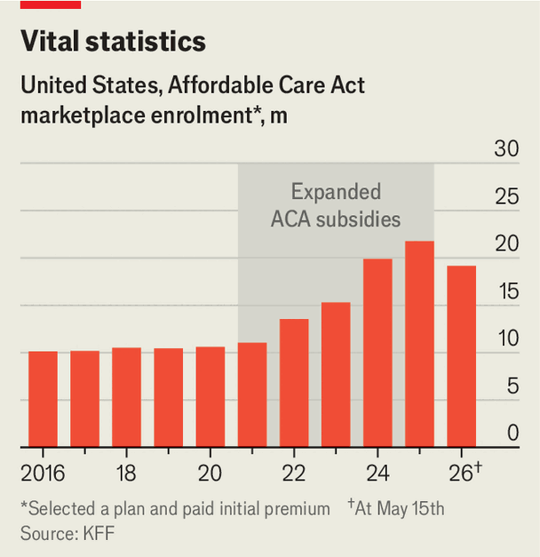

Obamacare is becoming even more frail
As the populist left calls for Medicare-for-all, Democrats’ signature health law is faltering
Aug 20th 2026
“HEALTH-CARE reform...is the great unfinished business of our society,” observed Ted Kennedy, a Democratic senator, before he died in 2009. America was the only large rich country that did not have universal health care. Instead, its system was a patchwork. The old, hard-up and disabled were covered by government programmes. Most working-age Americans got insurance through their jobs. But pity those without such coverage, who had to navigate the expensive and often bewildering individual insurance market.
The Affordable Care Act, passed in 2010, tried to fix that. It kept America’s system more or less intact, but expanded Medicaid, the public programme for the impecunious, and created new “exchanges” where individuals could compare and purchase plans. Even Obamacare’s most fervent advocates acknowledged, in private, that it was an imperfect bandage, particularly for those on the individual market. It was never enough for the likes of Bernie Sanders, a leftist senator who called for a single-payer system. That cause is now being taken up by a new generation of Democrats, such as Abdul El-Sayed, the party’s Senate nominee in Michigan, who has made health-care-for-all central to his campaign. New data explain the urgency: Obamacare’s bandage is unravelling.

That’s in part due to cuts to Medicaid. It’s also because the exchanges are in bad health. Obamacare offered some subsidies to defray the cost of individual plans. But the law’s mandate to buy insurance was in effect eliminated in 2019, and uptake on the exchanges was limited until 2021, when Congress made subsidies more generous for those who had already qualified and available to some who hadn’t. Enrolment then nearly doubled by 2025. Democrats sought unsuccessfully to extend the extra financial assistance, which would have cost about $35bn this year—about as much as the direct costs of the Iran war, according to the Pentagon’s estimate. Now that those subsidies are diminished, the individual market looks more frail than ever.
Figures from insurers and state marketplaces show the effect of the rollback. The number of people buying coverage through the exchanges has already fallen to 19.2m from 21.8m last year. The Congressional Budget Office (CBO), a non-partisan scorekeeper, reckons that by the end of this year it is likely to fall below 17m. Of those who dropped off the exchanges, most appear to be going without coverage.
The leavers tend to be more healthy than those who remain on the exchanges, making the remaining pool more costly to insure. Combine a sicker patient population and general inflation in health costs, and the result is higher premiums: this year the average payment increased from $113 to $178 per month. Many enrollees are now buying skimpier plans. In the past year the average amount an individual must pay out of pocket before insurance kicks in has jumped by nearly 40%, to $3,800.
This has raised fears of a dismal loop, with higher premiums and more limited plans making insurance still less attractive, particularly to healthier customers. As they leave the exchanges, premiums are driven yet higher. Insurers have already proposed a median premium increase of 15% for 2027, according to KFF, a think-tank. If state regulators approve those rates, pre-subsidy premiums will have grown by more than a third since 2025. The KFF imagines a 40-year-old in Indiana earning $65,000. In 2025, with subsidies, her monthly premium was $316. This year it is $477. Next year it will probably be close to $550.
Does this threaten the viability of the exchanges? The CBO estimates that by 2028, 10m fewer Americans will get insurance on the marketplaces compared with last year. But the exchanges will probably avoid collapse, with the remaining subsidies convincing enough people to remain. “The changes basically get us back to what the marketplace looked like from 2016 to 2019,” predicts Ben Sommers, a health economist at Harvard University. The exchanges will be smaller, with fewer participating insurers and sicker customers.
There will also be more people without insurance. Evidence suggests that they will put off needed treatment, like certain prescription medicines and surgeries. “We know that from a decade or more of research on the Affordable Care Act,” explains Mr Sommers. Hospitals must still provide emergency care for them, even if they cannot pay. In May unpaid care was up by an average of 16% compared with a year earlier, according to Kaufman Hall, a consultancy. HCA Healthcare, a for-profit hospital group, reckons the new uninsured population will cost the chain at least $1bn in operating profits this year, equivalent to about 15% of predicted net income. Enrolment on the exchanges in recent years shows “people generally want health insurance,” says Cynthia Cox of KFF. “It’s just a question of whether they can afford it.”■
Stay on top of American politics with The US in brief, our daily newsletter with fast analysis of the most important political news, and Checks and Balance, a weekly note that examines the state of American democracy and the issues that matter to voters.